Kungsleden (The King's Trail)
Sweden's Arctic long trail through the wilds of Lapland
Kungsleden (The King's Trail) runs 440 km through Sweden and finishes at Hemavan. The first landmark is Abisko. At 5,000 steps a day it's about 17 weeks of the walking you do anyway. All 18 landmarks are below, in walking order, with a photograph and the story of the place.
- 440km end to end
- 18landmarks
- 17 weeksat 5,000 steps a day
- Hemavanfinishes at

The landmarks of Kungsleden (The King's Trail)
18 landmarks, in walking order. Each photograph is by the person credited beneath it, used as they licensed it.
-
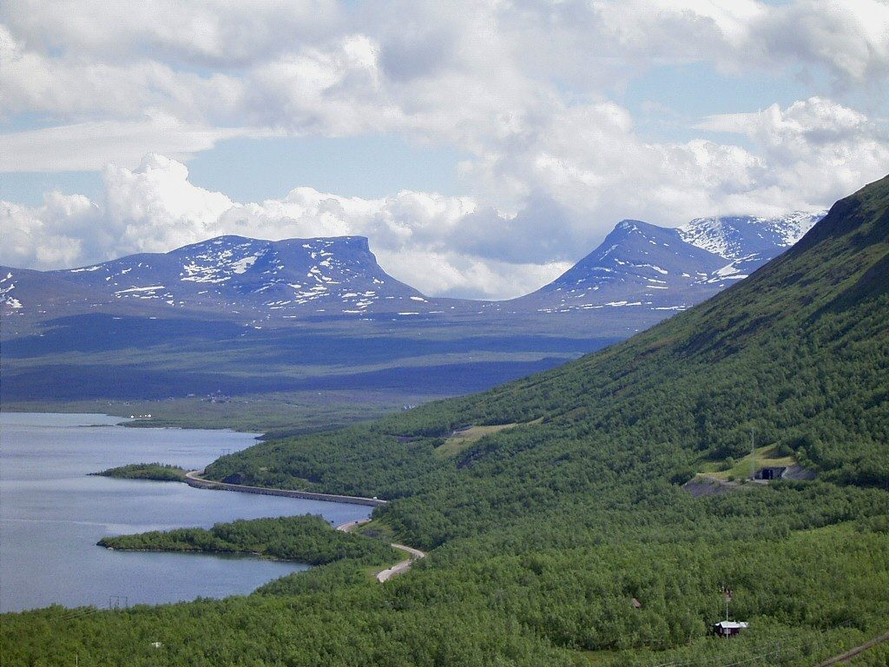
Photo: Lapplaender · Wikipedia, CC BY-SA 2.0 de Abisko
The trail begins in a national park north of the Arctic Circle, where the Abiskojåkka river cuts a canyon toward the great lake Torneträsk. Boardwalks lift the path over spongy tundra, and the mountain birch glows pale green. Reindeer belonging to Sami herders drift across without hurry. Roughly 440 kilometres of Lapland lie ahead, to be walked under the endless summer light.
-
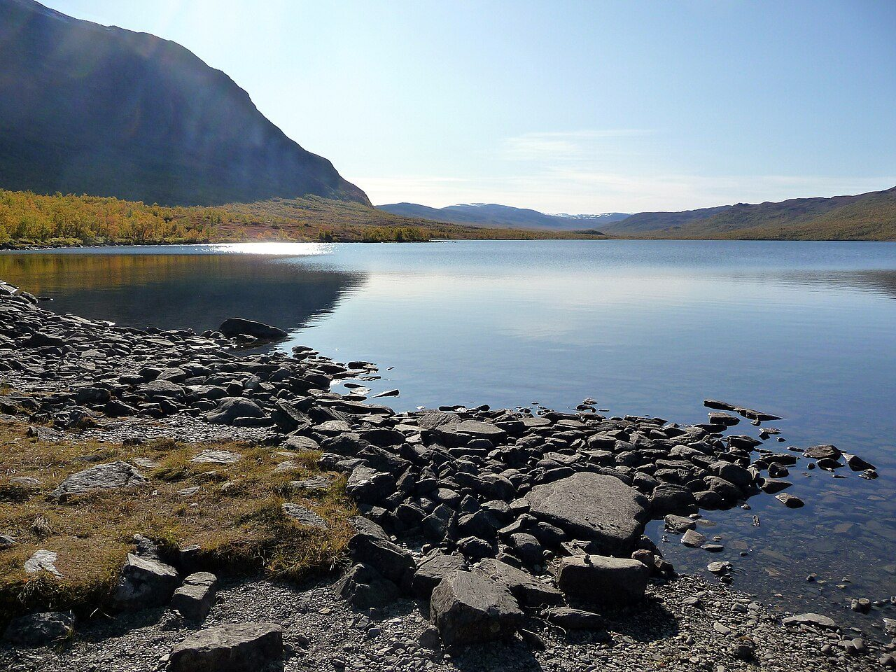
Photo: Robin van Mourik · Wikimedia Commons, CC BY-SA 2.0 Abiskojaure
A wooden STF hut sits on the shore of Ábeskojávri, its lake water dark and cold enough to sting. Anglers try for Arctic char while the birch forest thins around them. Bunks warmed by a wood stove make this the first of the mountain huts strung along the King's Trail. The land beyond turns barer with every kilometre north.
-
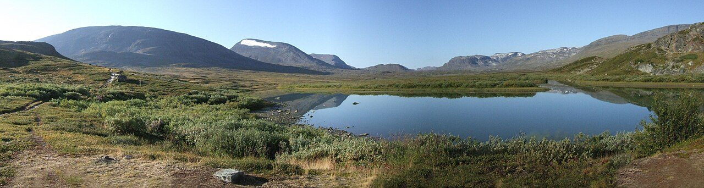
Photo: Sebastien D'ARCO · Wikimedia Commons, CC BY-SA 2.5 Alesjaure
Perched on a low ridge, this hut overlooks a broad valley braided with meltwater and threaded by a chain of shallow lakes. In summer a boat service ferries walkers up Alisjávri, saving weary legs. The tree line is gone now; only tundra, willow scrub and the wide Arctic sky remain. Sami turf huts stand nearby, still used at herding time.
-
Tjäktja hut
One of the smallest of the trail's huts crouches below the pass that shares its name. Weather changes fast up here, and walkers gather to read the sky before the climb. Snow can linger in the gullies well into July. Grey clouds often mass over the high ground to the south, a warning to fill bottles and wait for a clear window.
-
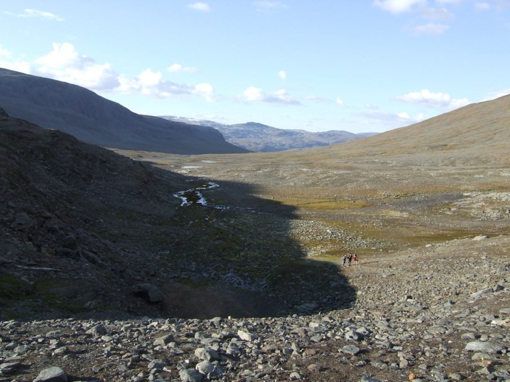
Photo: Sebastien D'ARCO · Wikimedia Commons, CC BY-SA 2.5 Tjäktja Pass
At 1,150 metres this saddle is the highest point on the whole trail, a stony notch between two shoulders of mountain. Wind funnels through it hard enough to lean on. From the emergency shelter at the top the Tjäktjavagge valley unrolls southward, glacier-scoured and empty. Snowfields cling to the slopes, and the horizon is nothing but rock, sky and distance.
-
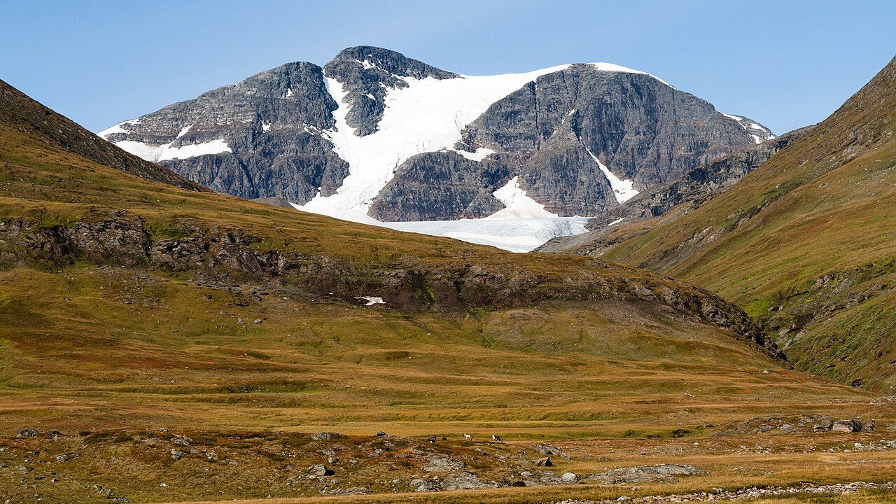
Photo: Christoph Strässler from Oberdorf BL, Schweiz · Wikimedia Commons, CC BY-SA 2.0 Sälka
Descending from the pass, the trail follows a rushing river down into greener valley floor. Sälka's huts include a small shop and a sauna, luxuries that feel enormous after days of tundra. Steep peaks rise on either side, their upper snow catching the low midnight sun. Fellow walkers swap stories of the weather over the pass while the stove ticks.
-
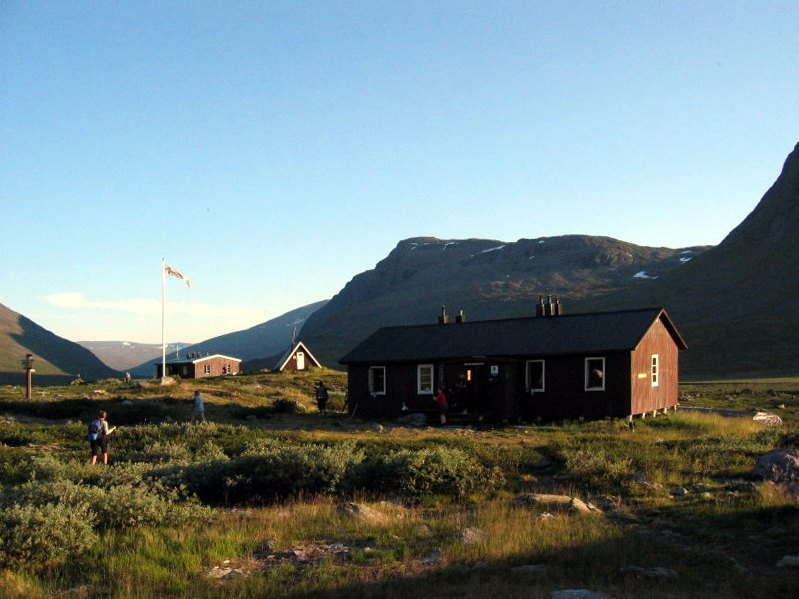
Photo: Rainer Hoffmann · Wikimedia via Openverse, CC BY-SA 3.0 Singi
Here the King's Trail meets the busy branch running east to Kebnekaise and Nikkaluokta. Packs cluster at the junction while people choose their route. The huts are modest, the setting stark: rolling fell, grazing reindeer, a cold wind off the heights. Many pause to decide whether to detour toward Sweden's roof before continuing the long walk south.
-
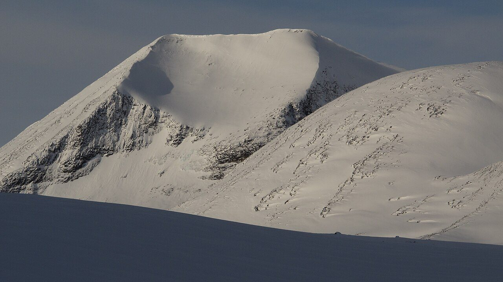
Photo: Tadeáš Gregor · Wikimedia Commons, CC BY-SA 3.0 Kebnekaise turnoff
Leaving the main line, a side path bends east toward Kebnekaise, Sweden's highest mountain at 2,097 metres. Its twin summits, one crowned by a shrinking glacier, dominate the eastern sky. Climbers stage at the mountain station below before roping up for the ice. Back on the King's Trail, the Arctic distance soon swallows the peak again.
-
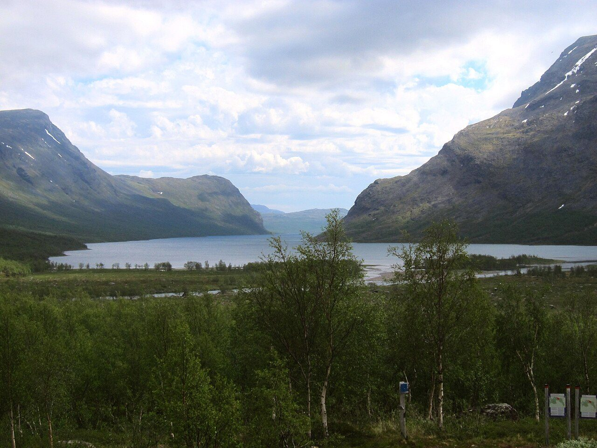
Photo: Moralist · Wikimedia Commons, CC BY-SA 4.0 Kaitumjaure
The land softens as the route drops toward the long lake of Káitumjávri, birch returning to the slopes. The hut looks out over water ringed by rounded fells, a gentler country than the passes behind. Char and grayling hold in the cold shallows. Evening light lies flat and gold across the surface, for the sun barely sets this far north.
-
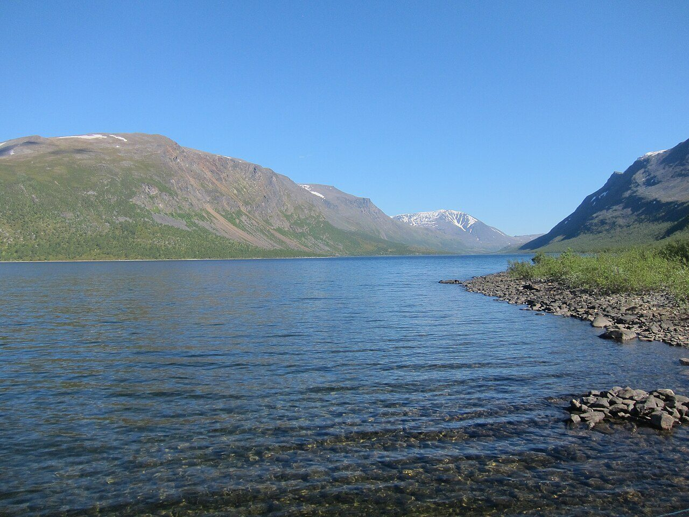
Photo: Moralist · Wikimedia Commons, CC BY-SA 4.0 Teusajaure
At the shore of Teusajávri a rowing boat lies drawn up on the gravel. Walkers row themselves across, or wait for the motorboat when the water is rough, then climb the steep far bank into open fell. It is one of several crossings where the trail simply hands over an oar. The lake mirrors the sky until a wake breaks it.
-
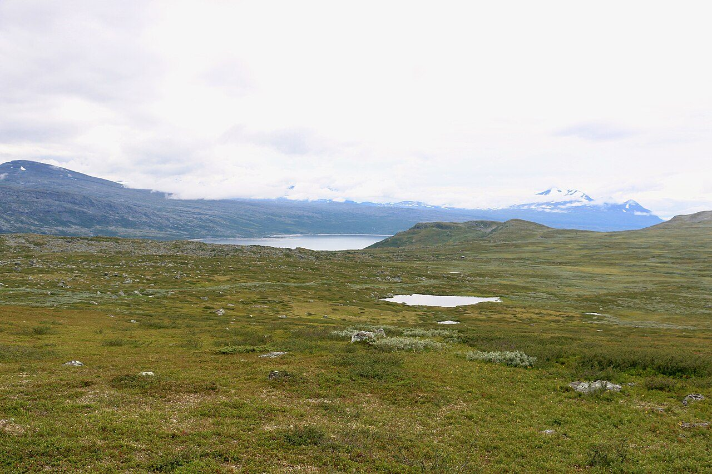
Photo: Silverkey (Mickaël Delcey) · Wikimedia Commons, CC BY-SA 4.0 Vakkotavare
The wilderness section pauses at a roadhead, where a hut waits beside the highway. From here a bus carries walkers along the reservoir to the next boat. It feels strange to hear an engine after days of silence. Steep forested slopes fall to the dammed waters of Akkajaure, and civilisation brushes the trail before releasing it south again.
-
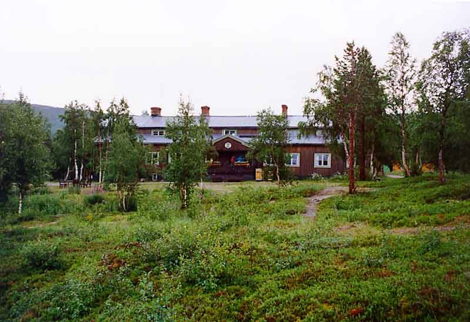
Photo: Peranders · Wikipedia, CC BY 3.0 Saltoluokta
A boat crosses the great lake Langas to a handsome old mountain station set among tall birch. Timber-panelled and warm, Saltoluokta has served hikers for over a century. Steam rises from the sauna by the water. Behind rise the peaks of Stora Sjöfallet, one of Europe's oldest national parks.
-
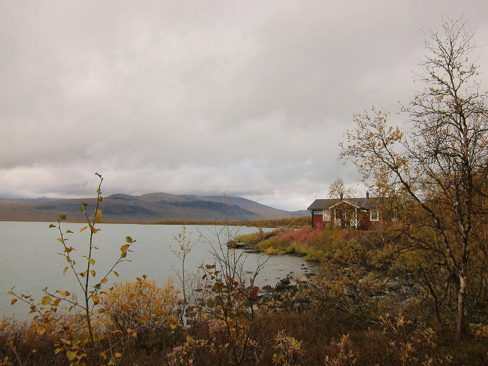
Photo: Moralist · Wikimedia Commons, CC BY-SA 4.0 Sitojaure
The path climbs over a bare plateau, then drops to Sitojávri, another lake demanding a crossing. A Sami family runs the motorboat over the four-kilometre passage; the wardens warn against rowing it, for the wind rises fast. Marsh and willow crowd the shore, alive with wading birds in the endless dusk. On the far side the ground rises again toward the heart of Sarek's peaks.
-
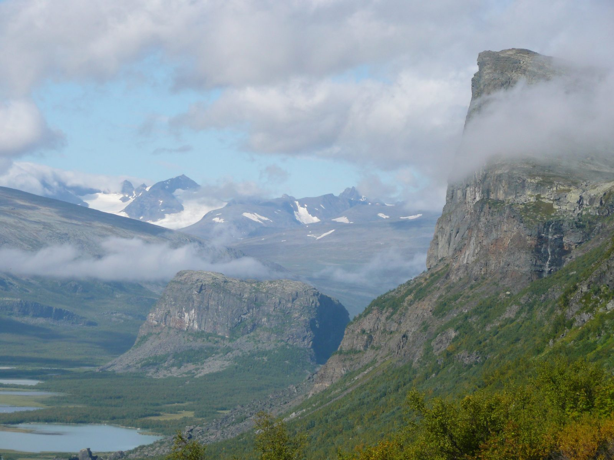
Photo: Kitty Terwolbeck from The Netherlands · Wikipedia, CC BY 2.0 Aktse
Few views on the trail match this one. From Aktse the Rapadalen valley opens below in a vast green delta, wild Sarek's glaciated summits crowding its head. The old red farmhouse and STF hut sit on a shoulder above the water. Elk browse the willow flats. The little peak of Nammatj above the huts gives the full sweep of it.
-
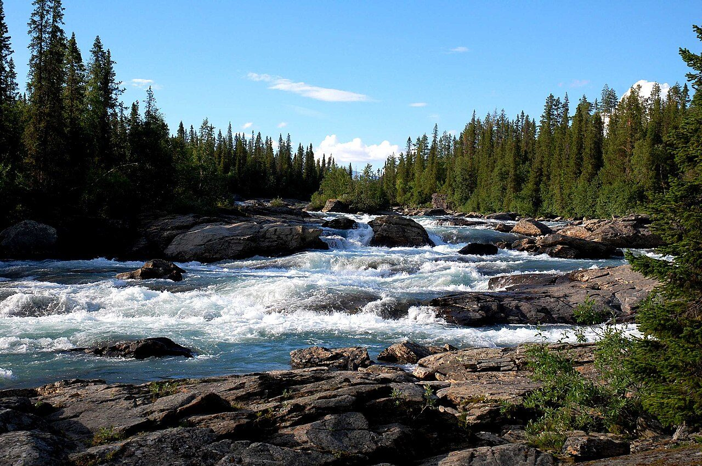
Photo: Svjo · Wikimedia Commons, Public domain Kvikkjokk
The forest closes in warm and thick on the descent to Kvikkjokk, a small settlement where a proper road returns. A mountain station, a chapel and the roar of the Kamajåkka rapids mark this old silver-mining outpost. Many hikers end the classic northern trail here. But the King's Trail runs on, quieter and wilder, another 250 kilometres to the south.
-
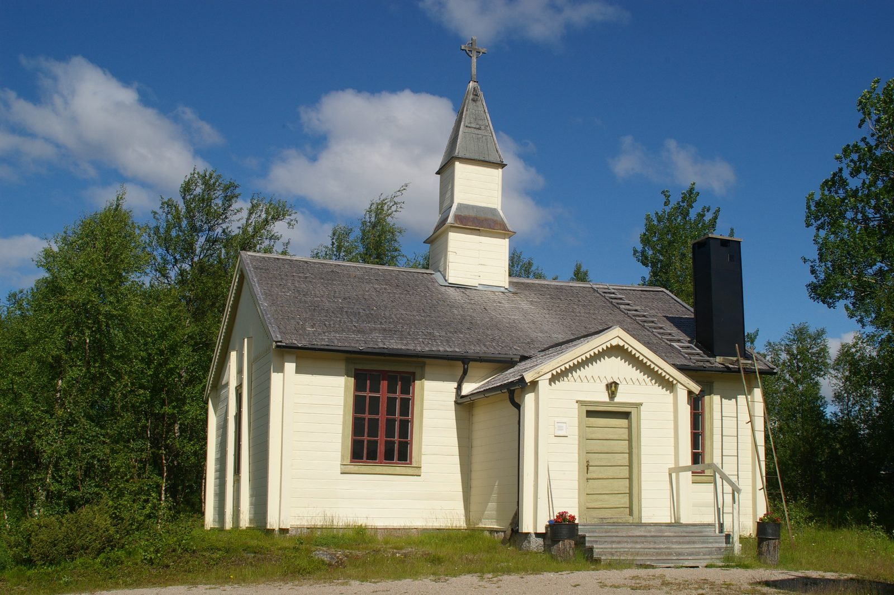
Photo: Pavouk · Wikipedia, CC BY-SA 3.0 Jäkkvik
Deep into the lonelier south, the route reaches the roadside hamlet of Jäkkvik between two long lakes. Far fewer boots pass this way, and the huts are simpler, run privately or by the STF. Pine forest and low fells replace the high drama of the north. A small shop offers resupply, welcome where the wild country between villages runs long.
-
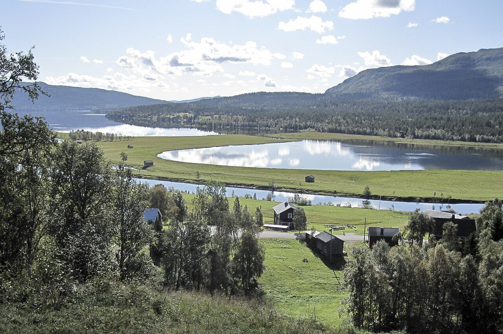
Photo: Xauxa Håkan Svensson · Wikimedia Commons, CC BY-SA 3.0 Ammarnäs
Ammarnäs is a Sami village cradled in the Vindelälven valley below the Ammarfjället fells. Its famous potato hill, a sunny slope of allotments, has been tended for generations. Reindeer husbandry still shapes the year here. The final stretch to Hemavan runs high over open mountain, counted among the trail's finest walking.
-
Hemavan
The last miles ride high through the Vindelfjällen reserve, one of Europe's largest protected wilds, before dropping to the ski village of Hemavan. After 440 kilometres of Lapland the birch closes in and a road appears. Northward stretch the fells the trail has crossed, ridge upon ridge. The King's Trail ends here, walked whole from the Arctic down its long spine to the south.
Walking Kungsleden (The King's Trail)
Your watch is already counting these steps. Watch Walks spends them on Kungsleden (The King's Trail), all 440 km of it, and hands you each landmark as you reach it. There's no route recording, no account and no ads. The Inca Trail is free; this one is a one-time purchase with no subscription.
Other trails in Europe
- Camino de Santiago 780 km · Spain
- Length of Britain 1,745 km · United Kingdom
- GR20 180 km · Corsica (France)
- Tour du Mont Blanc 170 km · France/Italy/Switzerland
- West Highland Way 154 km · Scotland
- Walker's Haute Route 180 km · France / Switzerland